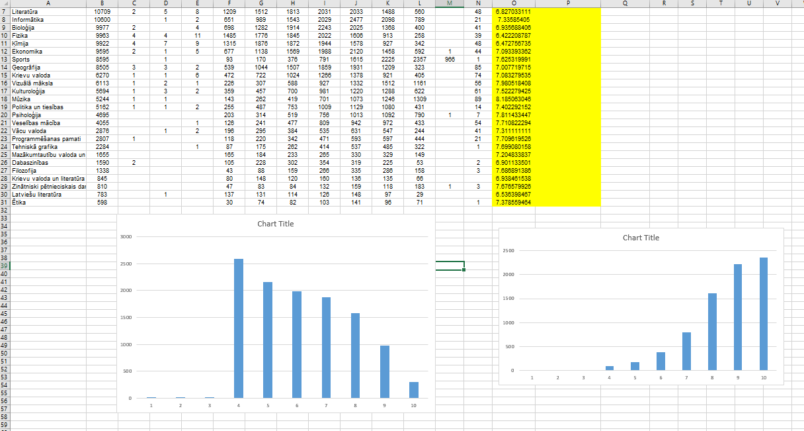
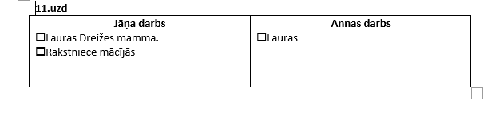
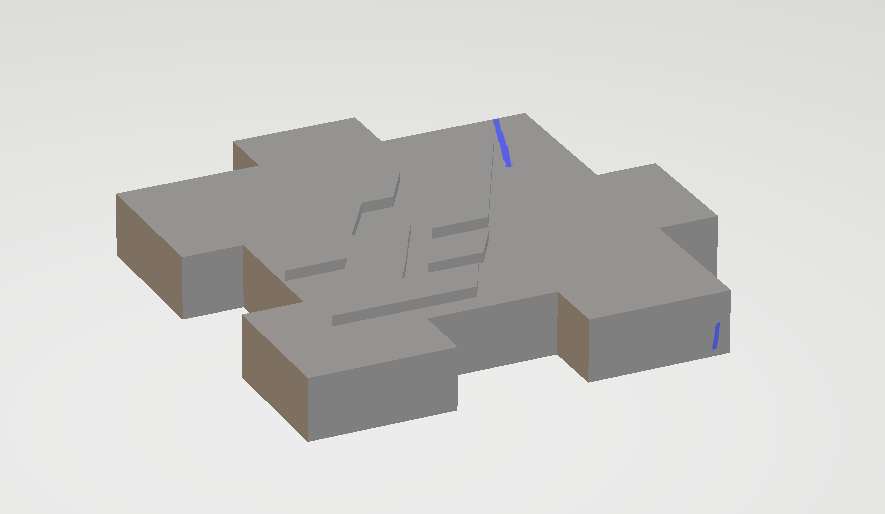

Attēlu apstrāde, izklājlapas, teksta apstrāde, video, html
Šeit būs apkopojums, ko esmu iemācījusies
Šajā tēmā apguvu rastrgrafiku un vektorgrafiku. Rastrgrafikā veidoju gimp animāciju par tēmu "aizsardzība pret ļaunatūru"
Vektorgrafikā veidoju logo priekš 3D printēšanas.
Veicu dažādus excel uzdevumus.
Veicu dažādus excel word.
Montēju video par 3d modelēšanu.
Taisīju 3d modelīti.
